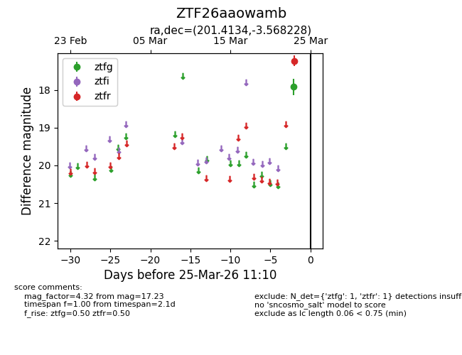
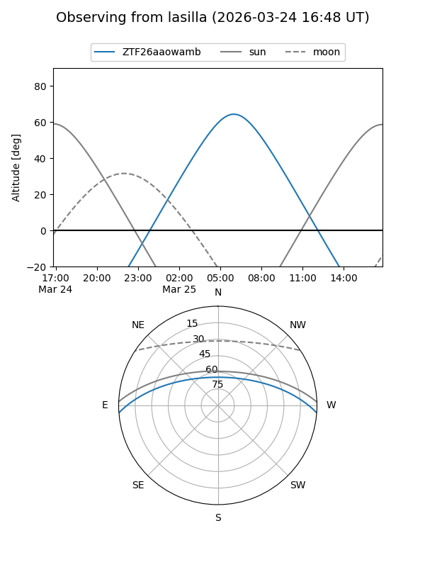
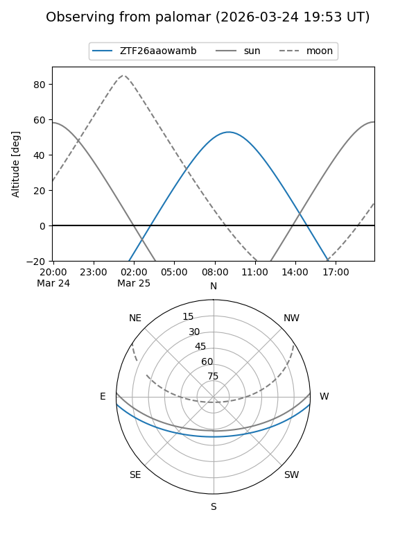

ZTF26aaowamb
Target ZTF26aaowamb at 2026-03-25 11:13
Aliases and brokers:
FINK: link
Lasair: link
ALeRCE: link
alt names
ZTF26aaowamb (ztf,fink_ztf)
Coordinates:
equatorial (ra, dec) = 201.4134,-3.56823
equatorial (HMS+DMS) = 13:25:39.21,-03:34:05.62
galactic (l, b) = (319.3002,+58.21199)
Flags:
Photometry:
last ztfg=17.92, ztfr=17.23
1 ztfg, 1 ztfr detections
Lightcurve

Visibility


Additional plots